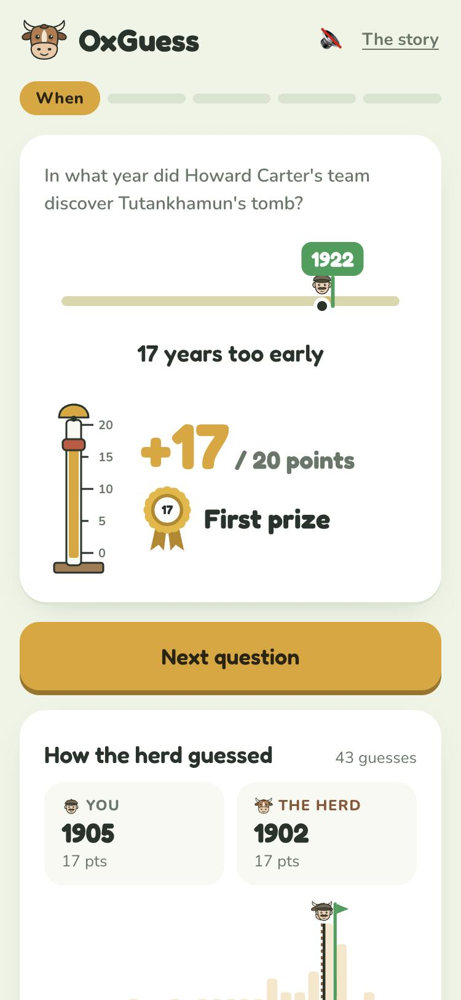
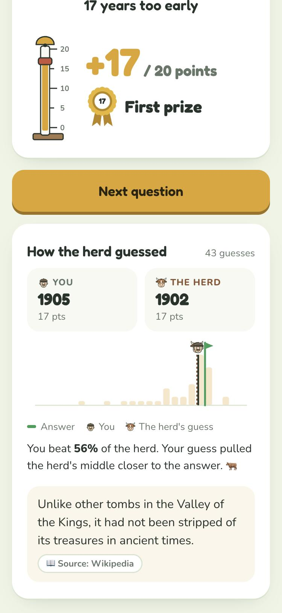
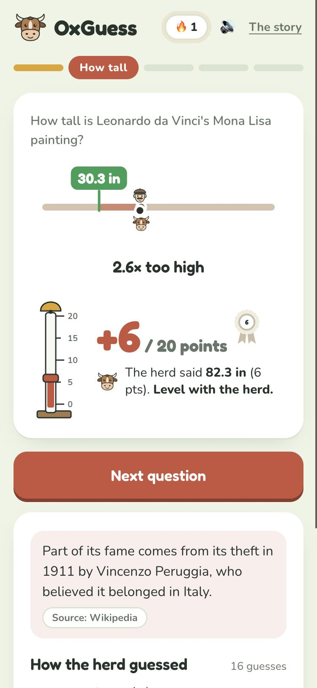
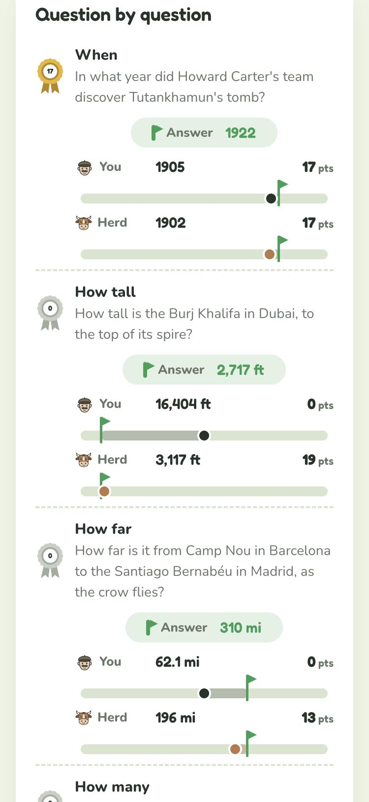
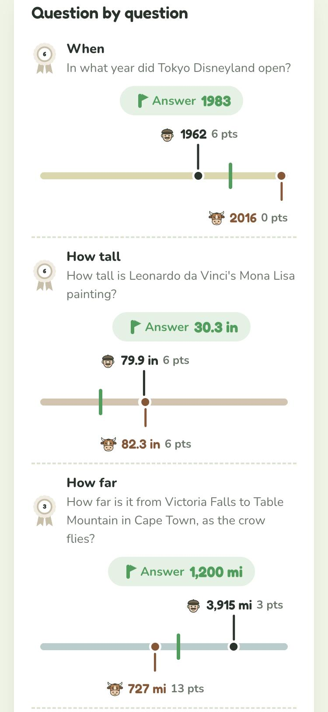

Before and after
The live game on the left, the proposed version on the right. The new version is a separate copy at /staging/game: it plays the real questions and reads the real herd, but never saves a guess. Add ?day=2026-11-18 (any date) to try another round.
The herd moves onto the line, and the score is said once
Before: today's Tutankhamun question. After: tomorrow's Mona Lisa question (its herd is only the 15 starter guesses so far).



- Your guess sits on the line, then the answer flag slides out from it with the gap filling in.
- The herd's ox walks from the answer to where the herd guessed, ticking as it goes.
- Then the strength tester and your points, then "The herd said …" and who got closer, then a small rosette stamped top right of your score.
- Under Next and the fact: the herd chart with its three lines (answer, you, herd), each value and score, and "You beat X% of the herd".
One line per question instead of two
You sit above the line with your guess and points, the herd below it, the answer as a green tick, with the green Answer pill kept from today's version. Near either end the labels tuck inwards.


Same share text, with breathing room
OxGuess · Round 4 🐂 ⚪⚪⚪⚪▫️ 21/100 🔥 2-day streak https://oxguess.com/
OxGuess · Round 4 🐂 ⚪⚪⚪⚪▫️ 21/100 🔥 2-day streak oxguess.com
Points come from the answer, not the slider's width
Already live, so both sides of the game use it. One rule: how many times out you are. Amounts are forgiving (nothing at 4 times out); dates and ages are strict (nothing at 1.6 times out, measured as years ago or age, plus 10); temperatures count from an ordinary day (15°C).
| Question and guess | Answer | Before | Now |
|---|---|---|---|
| Burj Khalifa, guessed 1,000 m | 828 m | 19 | 17 |
| Burj Khalifa, guessed 1,500 m | 828 m | 15 | 11 |
| Burj Khalifa, guessed 2,000 m | 828 m | 11 | 7 |
| Tutankhamun's tomb, guessed 1905 | 1922 | 17 | 14 |
| Tutankhamun's tomb, guessed 1880 | 1922 | 14 | 7 |
| Gold melts, guessed 1,300°C | 1,064°C | 14 | 17 |
| Forbidden City, guessed 1500 | 1420 | 14 | 14 |
| Lord's to the MCG, guessed 20,000 km (log) | 16,908 km | 18 | 18 |
The stats page
Now live at /stats: today and all time as tiles, players per day, back-the-next-day and cohorts, every round's scores against the herd, and each question drawn on its slider (today's answers behind a button).